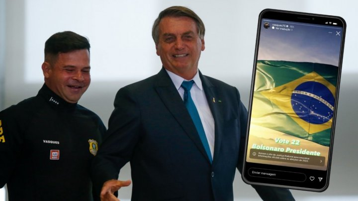

Elecciones 2022. La Policía impide votar a miles de personas en el Nordeste de Brasil para beneficiar a Bolsonaro
En las redes sociales circulan numerosos videos en los que se ven retenes de la Policía Federal de Carreteras montados en varias ciudades del país, principalmente en la región nordeste, donde Lula da Silva tiene una amplia ventaja sobre Jair Bolsonaro.
En redes sociales muchos videos muestran los retenes de la Policía Federal de Carreteras montados principalmente en la región nordeste, región en la que Lula da Silva sacó una amplia ventaja sobre Jair Bolsonaro, en la primera vuelta de la elección presidencial.
La región se transformó en los últimos años en un bastión clave en términos electorales para el PT y especialmente para Lula. Justamente en esa región nació el líder del PT, oriundo de Caetés, Pernambuco.
Según la información difundida en redes sociales la Policía, que depende del gobierno de Bolsonaro, impide que las personas puedan ir a votar deteniendo transportes e impidiendo que compren boletos de ómnibus.
Para que no quede duda del antidemocrático accionar dirigido a beneficiar a Bolsonaro basta con ver los posteos en redes sociales del director general de la Policía Federal de Carreteras (PRF), Silvinei Vasques. Vasques que es responsable de organizar operativos para impedir los votos del nordeste, pidió abiertamente votos para Bolsonaro. En una publicación realizada en la historia de su cuenta personal en Instagram, el sábado por la noche, el policía escribió "vota 22, presidente Bolsonaro" . La solicitud iba acompañada de una foto de la bandera de Brasil, pero fue eliminada a primera hora de la tarde de este domingo. En la red de fotos y videos, Vasques ya compartió con más de 41 mil seguidores, en ocasiones, fotos al lado de Bolsonaro en compromisos oficiales de gobierno que fueron atendidos por la PRF. El Nordeste es un bastión de votos antibolsonaristas, donde la extrema derecha es odiada por su política ultraliberal de hambre y miseria. El robo de votos del noreste fue un factor clave en las elecciones amañadas de 2018, en las que ganó Bolsonaro. El directo de la PRF, Vasques, es uno de los líderes policiales más alineados con el bolsonarismo. En enero estuvo una semana en Las Vegas, Estados Unidos, para participar en la feria de tiro deportivo Shot Show 2022, evento al que suelen asistir los hijos del presidente, como el diputado federal Eduardo Bolsonaro y el concejal Carlos Bolsonaro.
El Tribunal Superior Electoral (TSE) de Brasil pidió explicaciones este domingo a la Policía Federal de Carreteras por realizar operaciones que han obstaculizado el tránsito de votantes en la jornada de las elecciones presidenciales. Pero una publicación en Twitter muestra un documento donde el director general de la PRF, Silvanei Vasques, dice que no cumplirá con ninguna orden dada por el TSE.
La acción de la Policía que responde directamente a un bolsonarista, junto a las declaraciones de importantes figuras del Ejército, como la que hizo en su cuenta de Twitter el excomandante de ese fuerza el General Villas Boas, muestran como actúa las fuerzas represivas, que fueron claves en el golpe institucional contra Dilma Rousseff, para beneficiar a Bolsonaro e injerir antidemocráticamente en la elección.
Es preciso rechazar estas tentativas antidemocráticas, como afirma un artículo publicado por Esqueda Diaro "Abajo los operativos de la PRF y del Ejército que quieren impedir que el pueblo vote. Contra esta acción autocrática policial y militar, fruto de la podredumbre del régimen político heredero del golpe institucional de 2016, las amenazas golpistas de Bolsonaro y su pandilla, como las de Carla Zambelli y Roberto Jefferson, que las centrales sindicales como la CUT y la CTB, encabezadas por el PT y el PCdoB, organizan la lucha en todos los lugares de trabajo, para revocar también todas las reformas contra los trabajadores, los sectores oprimidos y el pueblo pobres, sin ninguna confianza en el Poder Judicial autoritario. Hay que combatir a Bolsoanro y sus seguidores con huelgas y movilizaciones con la unidad de nuestra clase, con un programa anticapitalista, sin alianzas con la derecha y acabando con los privilegios de policías faraones que odian a la población pobre y del Nordeste.".